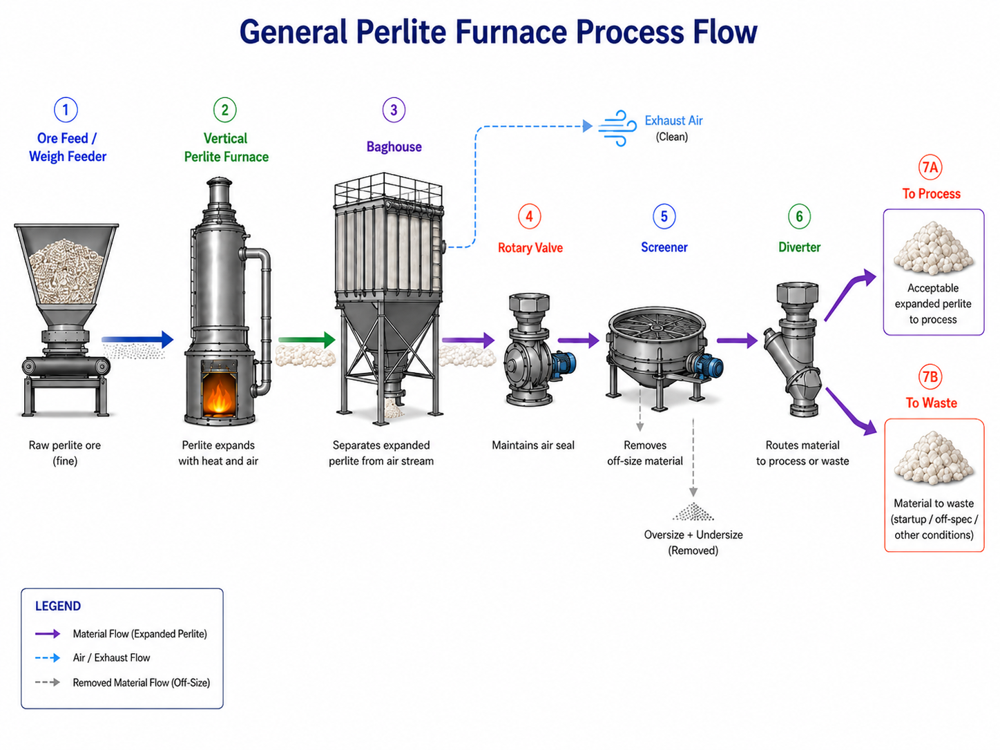
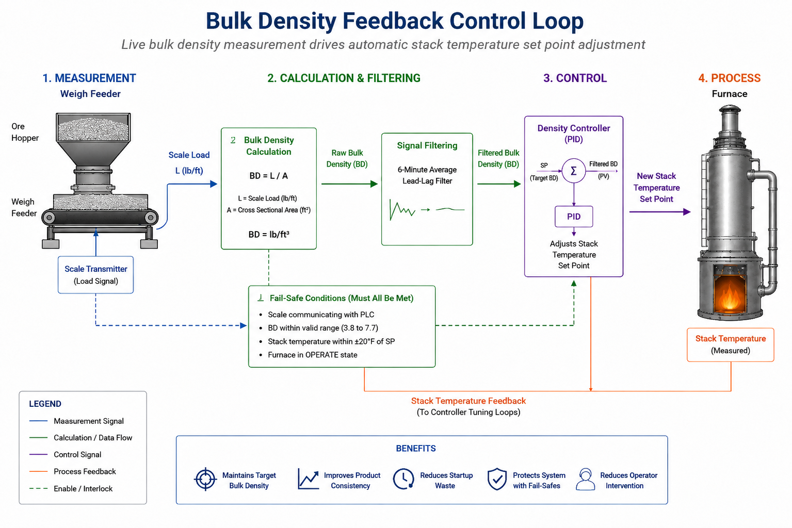

Industrial Furnace Controls and Startup Automation
Zero waste startup, live bulk density control, and furnace stability improvements for a 14 furnace perlite expansion system.
This project focused on improving startup repeatability, bulk density control, and process stability on a 14 furnace perlite expansion system. The work combined mechanical troubleshooting, controls logic, PID tuning, DOE, operator workflow updates, and production validation.

Project Metrics
- System: 14 vertical perlite expansion furnaces
- Focus: Startup automation, bulk density control, PID tuning, DOE
- Impact: $200K+ annual savings, improved repeatability, $500K+ CapEx support
- Tools: Minitab, PLC and HMI logic, process data, DOE, operator validation
System overview
Perlite ore is expanded in a vertical furnace, separated from the air stream in a baghouse, passed through a rotary valve that maintains the air seal, screened for particle size, and routed by a diverter either to waste or to the production process.
Furnace behavior varied with ore type, ambient conditions, equipment condition, and previous run state. Startup required careful control of feed, gas, temperature, and material routing before stable product could be sent downstream.
The engineering problem
Startup waste
Usable expanded perlite was routed to waste during startup until the furnace reached stable operation.
Bulk density variability
Bulk density depended on furnace temperature, feed behavior, ore properties, airflow, gas flow, and delayed manual sampling.
Control instability and operator burden
Multiple interacting loops made the furnace sensitive to tuning, deadbands, noisy signals, and operator setup.
Solution architecture
The solution was built around three connected systems: zero waste startup sequencing, live bulk density feedback, and furnace stability tuning.
Zero waste startup sequence
I developed a startup sequence that transitioned the furnace from purge and ignition into controlled feeding while capturing usable expanded perlite. The sequence used previous operating conditions to initialize feed and gas behavior, then controlled when the baghouse rotary valve, screener, diverter, gas ramp, feed ramp, and load control became active.
- System purge
- Furnace ignition
- Baghouse rotary valve and Rotex screener start
- Diverter initially routes material to waste
- Diverter automatically flips to process
- Gas valve ramps to previous set point
- Furnace begins feeding with ramp active
- Load control activates at stack set point or timer completion
Live bulk density feedback control
I implemented a live bulk density control loop using weigh feeder data. The system calculated bulk density from scale load and material cross sectional area, filtered the signal using a rolling average, and used the result to adjust the furnace stack temperature set point.

The major shift was moving from delayed manual correction toward live process feedback. Instead of waiting for manual samples to reveal density drift, the furnace could use weigh feeder data to make controlled set point adjustments.
Automatic control was only allowed when:
- Scale communication was valid
- Bulk density reading was within a valid range
- Stack temperature was close enough to set point
- Furnace was in the correct operating state
- Required conditions were met for a defined time window
Furnace stability, load control, and DOE tuning
Control loop stability
The furnace had multiple interacting control loops, including stack temperature, chamber temperature, mixer pressure, airflow, and gas flow. I tuned the system to reduce oscillation and improve process stability.
The improved control strategy favored load control, using ore feed as the primary manipulated variable while keeping air and fuel more stable. This reduced unnecessary interaction between gas and airflow loops and improved repeatability.
DOE parameter development
I used DOE methods to screen furnace variables, identify interactions, and refine run parameters by ore type. The workflow included initial variable screening, repeated high resolution trials, control improvements to reduce outside variation, re screening, Minitab and Excel analysis, parameter implementation, and iteration.
- Gas rate
- Chamber temperature
- Mixer pressure
- Ore type
- Bulk density
- Air fuel ratio
Validation, fail safes, and production readiness
The control strategy included permissive logic and production checks so automatic control would only run under valid conditions. Validation focused on proving that startup logic, density feedback, and fallback behavior were reliable enough for live production.
- Startup trials
- Bulk density trend review
- Scale communication checks
- Valid density range checks
- Stack temperature permissives
- Furnace operating state permissives
- Sampling scheme
- Basic condition checks
Operator interface and standard work
A major part of the project was making the system usable by production teams. I documented basic condition checks, updated operating standards, and helped define the sampling and calibration workflow needed to support automatic bulk density control.
- HMI updates to distinguish manual and automatic control states
- Clearer visibility for set points and process values
- Sampling workflow updates for bulk density verification
- Scale calibration and tracking requirements
- Basic condition checks for air leaks, screens, weigh feeders, sensors, and baghouse draft switches
- Training requirements for standard operation and advanced controls
Results
- Developed zero waste startup logic for a 14 furnace perlite expansion system
- Captured usable expanded perlite during startup instead of routing it to waste
- Implemented live bulk density feedback using weigh feeder data
- Added permissive logic and fail safes for production safe automatic control
- Improved furnace stability through PID tuning, load control, and DOE based parameter refinement
- Supported $500K+ in feed system upgrades through planning, vendor coordination, installation, and commissioning
- Delivered $200K+ in expected annual savings through startup waste reduction and process improvements
What I owned
- Startup control sequence design
- Bulk density feedback concept and implementation support
- PID tuning and furnace stability work
- DOE planning and data analysis
- HMI and operator workflow updates
- Equipment validation and production rollout support
- Operator and team leader alignment for standard work adoption
Why it was hard
- Ore properties varied by source and condition
- Ambient temperature and humidity affected startup behavior
- Multiple PID loops interacted with each other
- Manual sampling created delayed feedback
- The solution had to work in live production with operators, not just in testing
Engineering themes
This project demonstrates root cause analysis, controls integration, DOE, process optimization, equipment validation, operator centered implementation, and production scale execution.